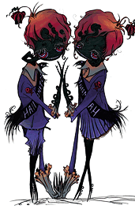

21 |
クリーチャー |
 |
ゲームに登場するクリーチャー：
学生 一見クラスメイトを思い出させますが、この闇のクリーチャーにはまったくと言っていいほど人間性がありません。彼らは影にひそみ、ジェイクが影に近づきすぎれば引き込もうと狙っています。しかし、彼らは賢すぎるのか臆病すぎるのか、闇から飛び出してジェイクを攻撃しようとはしません。
スキッター 学校にはゴキブリがつきものです。特にカフェテリアには。しかし、通常はこれほど大きくありません。スキッターは巨大なゴキブリで、光が当たるとバラバラになります。学生たちと違って方向感覚がないので、光へまっすぐ飛び込み、数秒で焼け死んでしまうこともあります。
英語教師の歪んだ変種です。このクリーチャーは静かな教室を求め、授業の邪魔をするものは何でも引き裂こうとします。暗い教室を好み、光を入れると逆上します。
この闇の用務員は、学校にある光をすべて取り除こうとします。調子外れの口笛を吹きながら学校のカフェテリアを清掃しています。光源の点灯は、彼にとってほとんど苦痛に等しいのです。
 風紀委員 陰険な密告屋である風紀委員たちは、廊下をウロウロして誰かが授業をサボっていないか探しています。少年がパトロールしている間、少女は怠惰な学生がいないか目を光らせるのです。幸い、ジェイクは若い女性の相手が得意なようです。
巨大でうなり声を上げるムキムキの体育教師は、クラスに弱者の存在を一切許しません。ドッジボールを胃から取り出し、招かれざる客には投げつけてきます。この猛獣を倒すには、ジェイクの懐中電灯だけでは力不足でしょう。
最後の教職員は用心深く、かつ執念深くこじんまりしたオフィスのこじんまりした机に座っています。ジェイクが何かしようとしても、その瞬間に阻止してしまうでしょう。倒すには、素早く行動するだけでなくアイテムをできるだけ有効に使わなければなりません。 |
 英語教師
英語教師
 用務員
用務員
 コーチ
コーチ
 校長
校長
 |
 |
 |